Ocho lecciones, dos por semana, treinta y dos técnicas, sostenidas por una sola idea: contra alguien más grande la fuerza no decide. Deciden el ángulo, la cadera y haber ensayado la respuesta antes de necesitarla. La primera lección se hace sola.
Duración
4 semanas · 8 lecciones
Cada sesión
45 min
Sesiones
2 por semana
Técnicas
32 con video
El plan
Una lección a la vez. Marca cada técnica cuando la practiquen y el curso te lleva a la siguiente. Tu avance se guarda en este dispositivo.
Esta guía no promete que salgas a la calle sintiéndote invencible. Promete algo más útil: que si alguna vez terminas en el piso con alguien encima, tu cuerpo ya sepa qué hacer en los primeros tres segundos, que son los que cuentan. Eso no se logra leyendo. Se logra repitiendo el mismo movimiento hasta que deja de ser una decisión.
Cada semana es una sesión de unos 45 minutos. Puedes repetirla dos veces si quieres — repetir es mejor que avanzar. El orden importa: la Semana 1 te da el movimiento base que usan todas las demás.
La compañera
No tiene que saber nada. Solo tiene que dejarse mover y no competir. Puede ser una amiga, tu pareja, tu hermana. Si es más grande que tú, mejor: así compruebas que la técnica sí funciona.
El piso
Alfombra, tapete de yoga o cobijas dobladas. Nunca sobre loseta ni cerca de muebles con esquinas. Retira lo que esté a menos de dos metros.
Lento primero
Toda técnica se aprende a un tercio de velocidad. La velocidad llega sola cuando el movimiento ya es correcto. Si aceleras antes, lo que memorizas es el error.
La señal de alto
Dos golpecitos con la mano en tu compañera o en el piso significan «ya». Se suelta al instante, sin preguntar. Vale para las dos, siempre.
Tres cosas honestas antes de empezar
Esto no reemplaza una clase. En el dojo alguien corrige el detalle que en video no se ve. Esta guía te da la base y el vocabulario.
Ninguna técnica se practica a velocidad real con alguien que no sabe recibirla. El objetivo es la mecánica, no probar quién puede.
La mejor defensa personal es la que evita el contacto. Distancia, salida, ruido, gente. Lo del piso es el plan C, y por eso hay que tenerlo.
Lección 1 de 8Sesión 1 · Sola
Semana 1
La base: distancia, caídas y la guardia
La primera sesión se hace sola: distancia, caer sin lastimarte y el movimiento que sostiene todos los escapes. La segunda ya es con compañera, en el suelo.
CalentamientoCalentamiento (8 min): caminar en círculo cambiando de dirección, rotaciones de cadera y hombros, 20 sentadillas lentas, 1 minuto de plancha en rodillas.
0 de 4 técnicas marcadas
Ver · Gracie Self-Defense Course · Distance Control · GracVer en YouTube ↗
Inicio: De pie, frente a un espejo o a una pared.
Pies a lo ancho de los hombros, uno ligeramente adelante. Rodillas suaves, nunca trabadas.
Manos arriba a la altura del pecho, palmas abiertas hacia afuera: es una postura que no parece agresiva pero ya te está protegiendo.
Barbilla abajo, hombros relajados. Mira el pecho, no los ojos: el pecho te avisa antes.
Muévete hacia atrás y en diagonal, nunca en línea recta. Practica 2 minutos: alguien imaginario avanza, tú retrocedes en ángulo.
La primera técnica de defensa personal es no estar ahí. Todo lo demás es el plan B.
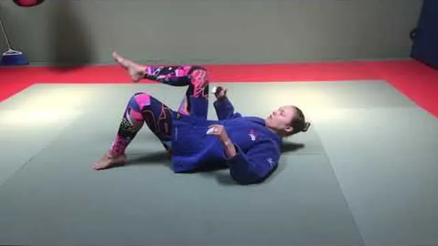
Ver · Basic Breakfalls / Women's Self Defence — TwinsVer en YouTube ↗
Inicio: Sentada en el piso, sobre alfombra o cobija doblada.
Sentada, brazos al frente, barbilla pegada al pecho — como si sostuvieras una naranja bajo la barbilla.
Rueda hacia atrás sobre la espalda redonda, sin dejar que la cabeza toque el piso.
En cuanto la espalda toca, golpea el piso con las dos palmas abiertas, brazos a 45 grados del cuerpo.
Sube el nivel: desde cuclillas, después desde de pie. 10 repeticiones por nivel.
Barbilla al pecho, manos al piso. La cabeza nunca toca.
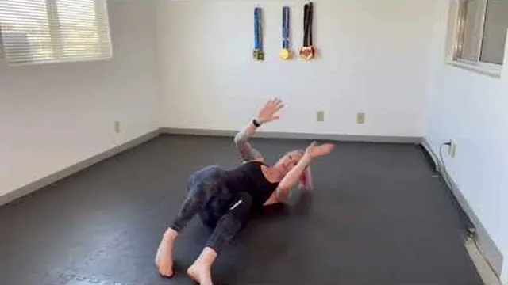
Ver · How to do hip escapes or «shrimp» in BJJ — Jitsu GypVer en YouTube ↗
Inicio: Acostada boca arriba, rodillas dobladas.
Planta un pie, gira sobre el hombro del mismo lado y empuja el piso.
La cadera se aleja en diagonal, no hacia arriba. El cuerpo queda de lado, en forma de C.
Los brazos se quedan como marcos frente al pecho, no aplastados bajo el cuerpo.
Cruza la sala así, ida y vuelta, tres veces. Este es el movimiento que más vas a usar en toda la guía.
Si sabes hacer el camarón, sabes crear espacio. Todo escape empieza aquí.
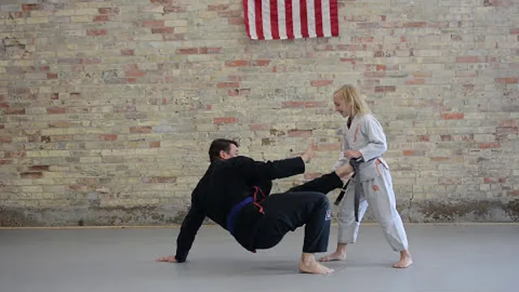
Ver · Women's self defense — Breakfall and standing uVer en YouTube ↗
Inicio: Sentada en el piso, una mano apoyada atrás.
Siéntate sobre una cadera, con la mano de ese mismo lado apoyada atrás y el codo firme.
El pie contrario se planta; la otra pierna pasa por debajo, hacia atrás.
Empuja con la mano y con el pie al mismo tiempo y llegas de pie, mirando siempre al frente.
Nunca te levantes dándole la espalda a nadie. 10 repeticiones por lado.
Ponerte de pie sin darle la espalda a nadie es una técnica, no un reflejo. Se practica.
Lección 2 de 8Sesión 2 · Con compañera
Semana 1
La base: distancia, caídas y la guardia
CalentamientoCalentamiento (8 min): repite el camarón cruzando la sala y 10 puentes de cadera. Ya son tuyos, sirven de calentamiento el resto del mes.
0 de 4 técnicas marcadas
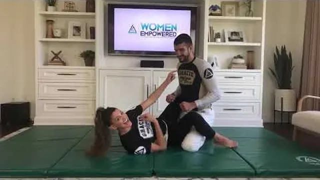
Ver · Women's Self-defense Seminar (Gracie Punch BlocVer en YouTube ↗
Inicio: Acostada boca arriba, tu compañera arrodillada entre tus piernas.
Cruza los tobillos detrás de su espalda baja y aprieta las rodillas contra sus costillas.
Mientras tus piernas la tengan, ella no puede llegar a tu cabeza ni a tu cuerpo: está atrapada a distancia de brazo.
Manos arriba, codos adentro, protegiendo la cara. Nunca los brazos estirados hacia ella.
Practica solo estar ahí 60 segundos mientras ella intenta pararse: siente cuánto se cansa el de arriba.
Estar debajo con la guardia cerrada no es estar perdiendo. Es tener a alguien atrapado.
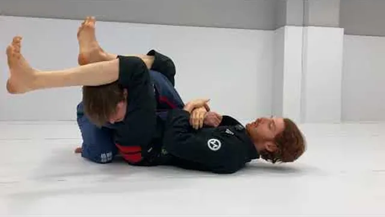
Ver · Breaking Posture in Closed Guard (The Complete GuideVer en YouTube ↗
Inicio: Abajo, guardia cerrada; ella sentada derecha.
Una mano detrás de su nuca. Jala hacia abajo con el brazo y con las piernas al mismo tiempo.
Su cabeza baja hasta tu pecho: abrázala ahí. Sin postura, nadie puede golpear ni pasar.
La otra mano controla una de sus muñecas.
Saca tu cadera del centro: nunca te quedes plana debajo de alguien.
Cabeza abajo y muñeca controlada. Con eso sola ya frenaste el 80% de lo que podía pasar.
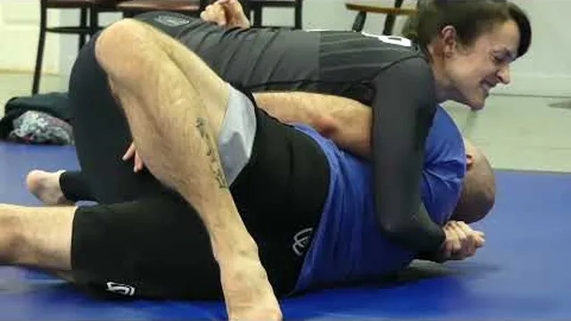
Ver · HOW TO stop getting CRUSHED on the bottom in BJJ · BVer en YouTube ↗
Inicio: Abajo, con tu compañera encima con todo su peso.
Un antebrazo cruzado en su cuello o en su hombro, el otro en su cadera. Esos son tus marcos.
Un marco es hueso contra hueso, con el codo pegado a tus costillas. No es empujar con fuerza — es estructura.
El error clásico: estirar los brazos. Un brazo estirado se lo llevan y ahí empieza el problema.
Con los marcos puestos, mete el camarón: espacio, y rodilla adentro.
El marco lo hace tu esqueleto, no tu fuerza. Por eso funciona contra alguien más pesado.
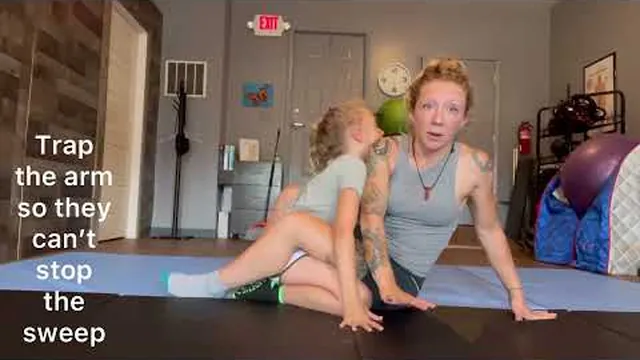
Ver · Hip Bump Sweep Tutorial · Chelsea LaGrasseVer en YouTube ↗
Inicio: Abajo, guardia cerrada; ella sentada derecha.
Abre las piernas y siéntate sobre un codo; después apoya esa mano atrás de ti.
El otro brazo pasa por encima de su hombro y engancha.
Sube la cadera y métela en su axila, como si te pararas de lado, y gira sobre ella.
Terminas tú arriba. Desde ahí, te levantas y te vas. Ese es el objetivo, no quedarse a pelear.
Siéntate, cadera a la axila, síguela. Y en cuanto quedas arriba, te pones de pie y sales.
Cierre de la semanaRepite la sesión 1 dos veces esta semana. El camarón tiene que salir sin pensarlo.
Lección 3 de 8Sesión 1 · En el suelo
Semana 2
Salir de abajo y romper agarres de pie
La semana más importante de las dos primeras: las tres posiciones en las que de verdad aparece una agresión en el piso, y los cuatro agarres que ocurren de pie.
CalentamientoCalentamiento (8 min): camarón, puentes, levantada técnica. Después 1 minuto de solo respirar acostada con alguien encima — suena raro, pero no entrar en pánico se entrena.
0 de 4 técnicas marcadas
Ver · Women Empowered — Trap & Roll · TruStrengthVer en YouTube ↗
Inicio: Abajo, tu compañera sentada sobre tu abdomen.
Atrapa un brazo: agarra su muñeca con las dos manos y pégala a tu pecho. No la empujes hacia arriba.
Atrapa su pie del mismo lado con tu pie, por fuera.
Planta los dos pies cerca de tu cadera y haz puente fuerte hacia el techo, en diagonal sobre el hombro atrapado.
Rueda por encima de ese hombro. Caes tú arriba, entre sus piernas.
Atrapa el brazo, atrapa el pie, puente al cielo. Sin atrapar, el puente no sirve.
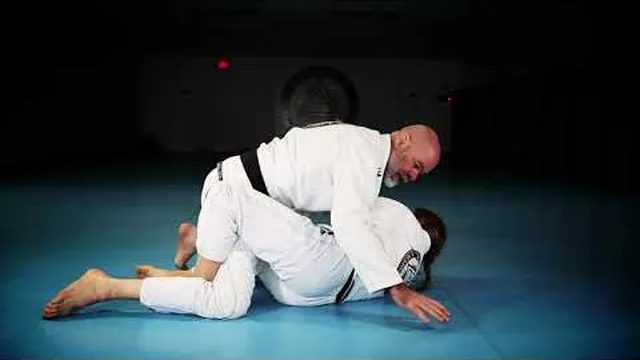
Ver · Bridge & Roll and Knee & Elbow Mount EscapesVer en YouTube ↗
Inicio: Abajo, en montada; el puente ya no funcionó porque ella apoyó las manos.
Marco: un antebrazo en su cadera, la otra mano en su rodilla.
Camarón: aleja la cadera hacia ese lado, girando de costado.
Mete la rodilla de ese lado entre los dos cuerpos, como una cuña.
Saca el pie y recupera la guardia. Repite del otro lado: siempre hay un lado que sí.
El puente y el codo-rodilla son pareja: cuando uno falla, el otro está esperando.
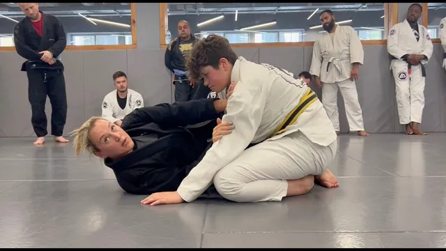
Ver · Natalie Day Teaches a Side Control Escape · MauricioVer en YouTube ↗
Inicio: Abajo, ella con el pecho cruzado sobre tu pecho.
Primero los marcos: antebrazo en su cuello o su hombro, mano en su cadera. Codos adentro.
Puente pequeño para despegarla, y en ese instante camarón alejando la cadera.
Mete la rodilla cercana cruzando su estómago, y los pies encuentran sus caderas.
Si el camarón no alcanza, la otra opción es girar hacia ella hasta tus rodillas y salir por delante.
Primero los marcos, luego la cadera. Si empiezas por la cadera, te vuelve a caer encima.
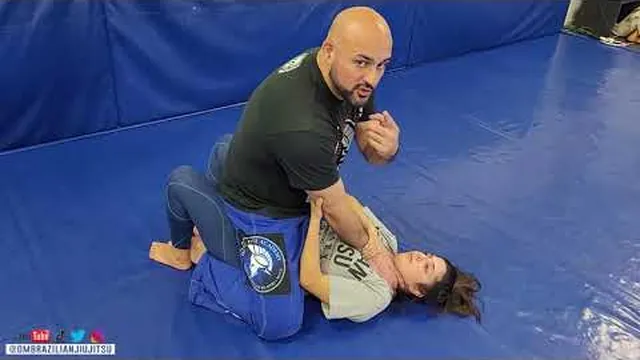
Ver · Women's Self Defense — Ground Choke Escape (FulVer en YouTube ↗
Inicio: Abajo, en montada, con las dos manos de ella en tu cuello. Practica esta MUY lento.
Barbilla abajo de inmediato y hombros arriba: le quitas el espacio del cuello.
Levanta los dos brazos por encima de sus brazos y atrapa uno contra tu pecho — el de arriba, con las dos manos.
Atrapa su pie de ese mismo lado con tu pie.
Puente en diagonal y rueda: es el mismo escape del puente y giro, aplicado al peor momento.
Es la misma técnica que ya sabes. Por eso se practica hasta que sale sin pensar.
Lección 4 de 8Sesión 2 · De pie
Semana 2
Salir de abajo y romper agarres de pie
CalentamientoCalentamiento (8 min): 3 minutos de manejo de distancia de la semana 1, moviéndote en diagonal mientras tu compañera camina hacia ti.
0 de 4 técnicas marcadas
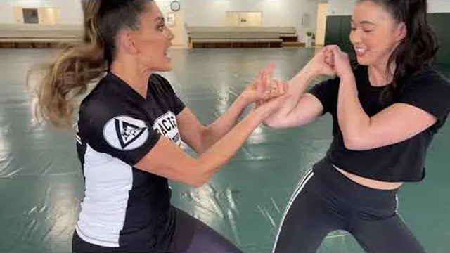
Ver · Self-Defense 101: The Wrist Release with Eve & VVer en YouTube ↗
Inicio: De pie; ella te sujeta una muñeca con una mano.
No jales hacia atrás: es exactamente donde ella es más fuerte.
Gira tu muñeca hacia el hueco entre su pulgar y sus dedos — el pulgar es siempre el punto débil del agarre.
Baja el codo y saca la mano en círculo hacia tu propio cuerpo, con un paso atrás en diagonal.
Termina en postura defensiva, con distancia. Diez repeticiones por lado.
Contra el pulgar, no contra la mano completa. Ahí no hay fuerza que valga.
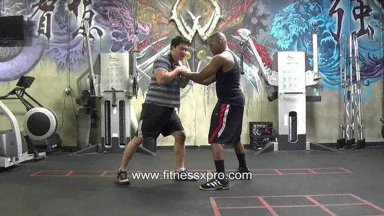
Ver · How to Escape From a Front Double Collar Grab · WomeVer en YouTube ↗
Inicio: De pie; ella te agarra la camisa o el cuello con las dos manos.
Primero la base: un pie atrás, rodillas suaves. No te dejes empujar hacia atrás.
Una mano atrapa las suyas contra tu pecho para que no te sacudan.
Levanta el otro brazo por fuera y gira todo el cuerpo bajo ese brazo, como si abrieras una puerta.
El giro rompe los dos agarres a la vez. Sales de lado, no hacia atrás.
El agarre se rompe con la cadera girando, no con los brazos tirando.
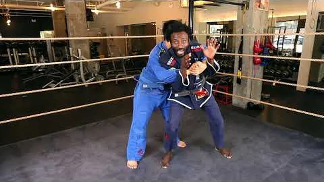
Ver · Women's Self Defense — Rear Bearhug Escape · VeVer en YouTube ↗
Inicio: De pie; ella te abraza desde atrás, por encima o por debajo de los brazos.
Baja el centro de gravedad de golpe: cadera atrás, rodillas dobladas. Un cuerpo pesado y bajo no se levanta.
Atrapa uno de sus brazos con las dos manos para que no te muevan.
Gira la cadera hacia un lado y mete tu cadera por fuera de la suya, abriendo espacio.
Sales por ese hueco mirándola de frente. Nunca sales corriendo de espaldas.
Peso abajo primero. Si sigues alta, cualquiera te levanta.
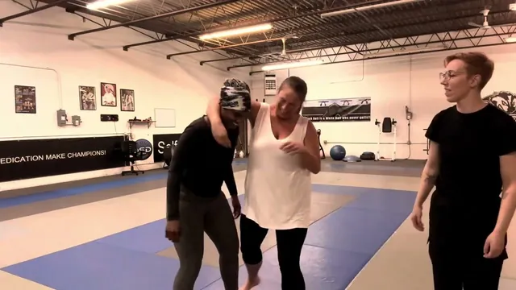
Ver · Headlock escape — women's self defense workshopVer en YouTube ↗
Inicio: De pie; ella te tiene la cabeza bajo su brazo, de lado.
Barbilla adentro y gira la cara hacia su cuerpo: eso libera la tráquea de inmediato.
Una mano en su cadera lejana como marco, para no quedar pegada a ella.
Da un paso al frente por detrás de sus piernas y baja tu cadera bajo la suya.
Gira, y sales por su espalda o la llevas al piso. Terminas de pie y con distancia.
Barbilla adentro, cara hacia ella. Lo primero es respirar; lo segundo es salir.
Cierre de la semanaTu compañera elige un agarre al azar y te lo aplica suave, sin avisar. Diez repeticiones. Ese «sin avisar» es lo que convierte una técnica en una respuesta.
Lección 5 de 8Sesión 1 · Terminar desde abajo
Semana 3
Terminar desde abajo y salir corriendo
Hasta aquí aprendiste a sobrevivir. Esta semana aprendes a terminar la situación — y algo igual de importante: cuándo NO hacerlo. En defensa personal el objetivo nunca es ganar la pelea. Es irte.
CalentamientoCalentamiento (8 min): camarón, puentes, levantada técnica. Después 2 minutos de guardia cerrada nada más aguantando, sin atacar.
0 de 4 técnicas marcadas
Ver · Fox Fixes Your Triangle From Guard · GaidamaVer en YouTube ↗
Inicio: Abajo, guardia cerrada; ella tiene un brazo adentro y uno afuera.
Controla la muñeca del brazo de adentro y empújala cruzando su cuerpo.
Pie en su cadera del lado contrario, saca tu cadera y sube la pierna sobre su hombro.
Cruza el tobillo detrás de tu rodilla. Ese es el candado.
Jala su cabeza y aprieta las rodillas. Es la técnica que más iguala una diferencia de tamaño.
Un brazo adentro, uno afuera. Esa es la señal, y llega sola cuando alguien te sujeta.
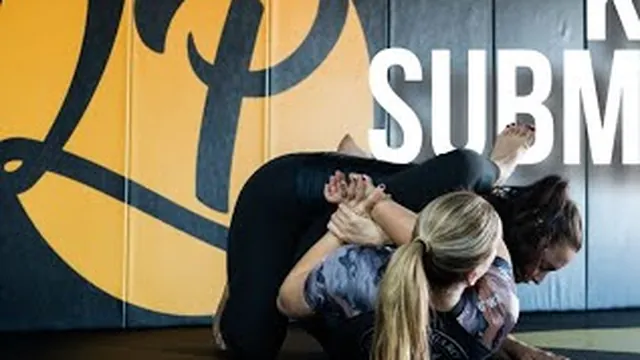
Ver · Kimura Submission from Closed Guard · Chelsah LyonsVer en YouTube ↗
Inicio: Abajo; ella apoya una mano en el piso junto a ti.
Siéntate hacia ese lado y agarra su muñeca con tu mano contraria.
El otro brazo pasa sobre su hombro y agarra tu propia muñeca.
Saca la cadera y sube la pierna sobre su espalda para que no ruede.
Gira su mano hacia su espalda, muy despacio. Suelta al primer tap.
Cuando alguien te sujeta desde arriba, casi siempre apoya una mano. Esa mano es tuya.
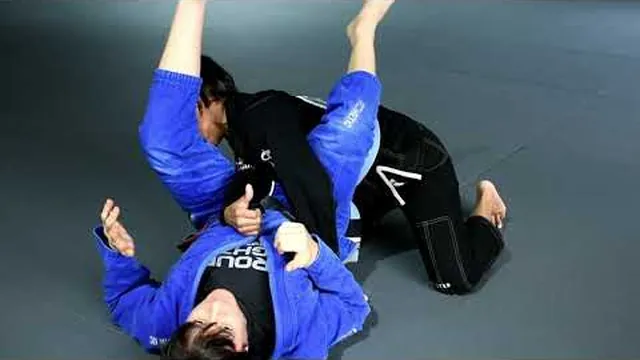
Ver · Denise Houle · Armbar from Closed GuardVer en YouTube ↗
Inicio: Abajo; ella empuja tu pecho con un brazo estirado.
Atrapa esa muñeca y pégala a tu pecho con las dos manos.
Pie en su cadera, gira 90 grados sacando la cadera del centro.
La otra pierna pasa por encima de su cabeza, rodillas apretadas.
Sube la cadera despacio. Muy despacio: esta se cierra en un segundo.
Un brazo estirado empujándote es un brazo que te están regalando.
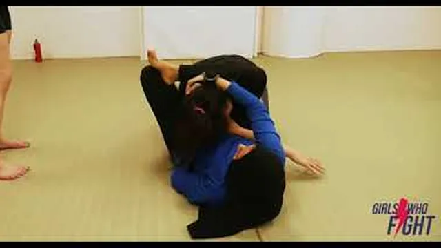
Ver · Jiu Jitsu Submissions for Women's Self Defense Ver en YouTube ↗
Inicio: Concepto. Míralo y platíquenlo antes de seguir.
Una sumisión te obliga a quedarte. En defensa personal quedarte es lo peor que puedes hacer.
Si hay más de una persona, si hay un objeto, o si tienes salida: no atacas, te vas.
Las llaves sirven para una cosa: crear el momento en que puedes soltarte y correr.
Practícalas para tenerlas. Úsalas solo si no hay otra.
El que gana la pelea sigue ahí. El que se va, ya ganó.
Lección 6 de 8Sesión 2 · Salir y correr
Semana 3
Terminar desde abajo y salir corriendo
CalentamientoCalentamiento (8 min): levantada técnica desde el piso, diez de cada lado, y 2 minutos moviéndote hacia atrás en diagonal mientras ella camina hacia ti.
0 de 4 técnicas marcadas
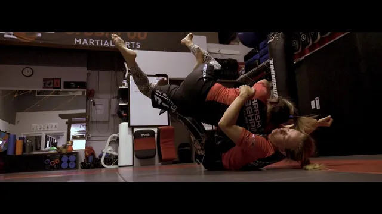
Ver · BJJ For The Street: Foot On Hip Sweep To Get Up · BJVer en YouTube ↗
Inicio: Abajo, guardia cerrada.
Haz el golpe de cadera que ya sabes hasta quedar tú arriba.
No te quedes a controlarla. En cuanto tu rodilla toque el piso, empuja y párate.
Sal caminando hacia atrás, de frente a ella, nunca dándole la espalda.
Repite diez veces. Lo que se entrena es el reflejo de irse, no el de quedarse.
Barrer y quedarse a pelear es deporte. Barrer e irse es defensa personal.
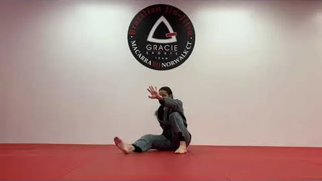
Ver · BJJ Basics: Technical Stand up · Deborah GracieVer en YouTube ↗
Inicio: Tú arriba, dentro de su guardia cerrada.
Manos en sus caderas o en su pecho, postura derecha, nunca dejes que jale tu cabeza.
Sube un pie junto a su cadera, luego el otro, y párate con las rodillas dobladas.
Pon una rodilla en su coxis y empuja su rodilla hacia abajo para abrir las piernas.
En cuanto se abran, das un paso atrás y sales. No pases la guardia: vete.
Si tú estás arriba y ella te tiene entre las piernas, tu objetivo es salir, no pasar.
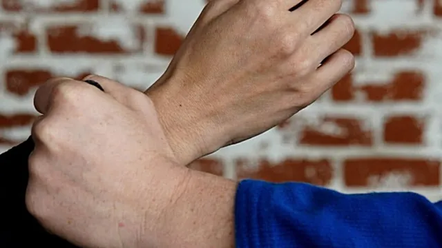
Ver · 6 Jiu Jitsu Grip Breaks You Need To Know · Erika DawVer en YouTube ↗
Inicio: Abajo; ella te sujeta las muñecas o la ropa.
Contra el pulgar siempre: gira tu muñeca hacia el hueco entre su pulgar y sus dedos.
Si te sujeta la ropa, atrapa su mano contra tu cuerpo y gira todo el torso.
Nunca jales hacia atrás. Los dos brazos rectos hacia atrás es donde ella es más fuerte.
Cada vez que rompes un agarre, inmediatamente marco y camarón para crear espacio.
Romper el agarre no sirve de nada si no usas el segundo que te da.
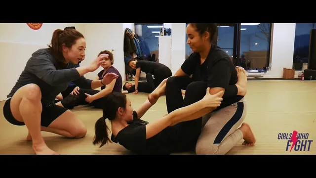
Ver · Ground Escapes: Jiu Jitsu for Women's Self DefeVer en YouTube ↗
Inicio: De pie, después de soltarte.
En cuanto estés libre, dos pasos rápidos hacia atrás en diagonal, no en línea recta.
Manos arriba y abiertas, mirando su pecho.
Grita algo concreto: «¡fuego!» o «¡llamen a la policía!». Concreto llama más gente que «¡ayuda!».
Corre hacia donde haya gente o luz, no hacia donde esté oscuro aunque sea más cerca.
Lo último que practicas siempre es irte. Que sea lo que salga solo.
Lección 7 de 8Sesión 1 · Cuando hay golpes
Semana 4
Cuando hay golpes, y escenarios reales
La última semana es la más incómoda y la más útil. Primero lo que casi ningún curso enseña: qué hacer desde abajo cuando además te están golpeando. Y después los escenarios que de verdad ocurren de pie.
CalentamientoCalentamiento (8 min): repasa el marco y el camarón. Después 1 minuto acostada con su peso encima, solo respirando. No entrar en pánico también se entrena.
0 de 4 técnicas marcadas
Ver · How to Defend Against Punches on the Ground · GracieVer en YouTube ↗
Inicio: Abajo, guardia cerrada; ella intenta golpear despacio.
Guardia cerrada apretada: mientras la tengas, ella no tiene distancia para pegar fuerte.
Codos adentro y manos arriba protegiendo la cara, nunca los brazos estirados.
Si se levanta para golpear, jala su cabeza hacia tu pecho con el agarre de nuca.
Cabeza pegada a tu pecho = no hay golpe posible. Esa es toda la técnica.
La guardia cerrada existe justo para esto. No es una posición deportiva, es un paraguas.
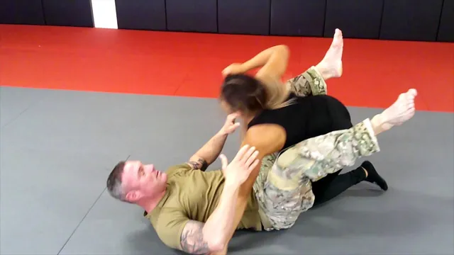
Ver · Mount Escape Series: Punch Defense · American WarrioVer en YouTube ↗
Inicio: Abajo; ella está encima y tú no alcanzas a cerrar la guardia.
Barbilla pegada al pecho, los dos antebrazos cubriendo la cara, codos juntos.
No te quedes ahí cubriéndote: jala su cuerpo hacia el tuyo y abrázala fuerte.
Pegada a ti no puede tomar impulso. La distancia es lo que hace daño, no el puño.
Desde el abrazo, busca cerrar la guardia o empezar el puente.
Cuando no puedes bloquear, pega. Pegada a ti, el golpe no existe.
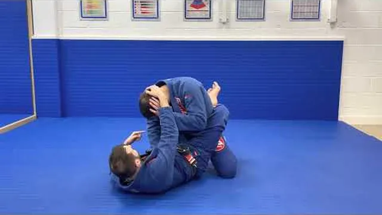
Ver · Defending Strikes From Closed Guard · Gracie Barra HVer en YouTube ↗
Inicio: Abajo, guardia cerrada; ella se sienta derecha para pegar.
Agarre de nuca con una mano y control de una muñeca con la otra.
Jala su cabeza hacia abajo con el brazo y con las piernas al mismo tiempo.
Abrázala contra tu pecho y saca tu cadera del centro.
Si suelta la muñeca para pegar, esa mano ya está lejos: cambia al puente.
Cabeza abajo y una muñeca controlada. Con eso sola frenas casi todo.
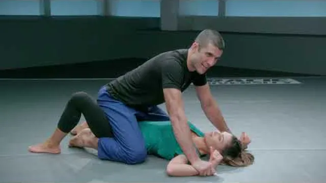
Ver · Man Pinning Both Wrists in Mount · GracieBreakdownVer en YouTube ↗
Inicio: Abajo, en montada, con el brazo atrapado.
Atrapa un brazo pegándolo a tu pecho y atrapa su pie del mismo lado.
Los dos pies plantados, puente fuerte en diagonal sobre ese hombro.
Rueda por encima del hombro atrapado hasta quedar tú arriba.
En cuanto quedes arriba: te paras y te vas. No te quedes a controlar.
Es el mismo puente y giro de la semana 2, ahora con alguien golpeando. Por eso se repite.
Lección 8 de 8Sesión 2 · De pie, escenarios reales
Semana 4
Cuando hay golpes, y escenarios reales
CalentamientoCalentamiento (8 min): 3 minutos de manejo de distancia moviéndote en diagonal mientras ella avanza, y repaso rápido de los cuatro agarres de la semana 2.
0 de 4 técnicas marcadas
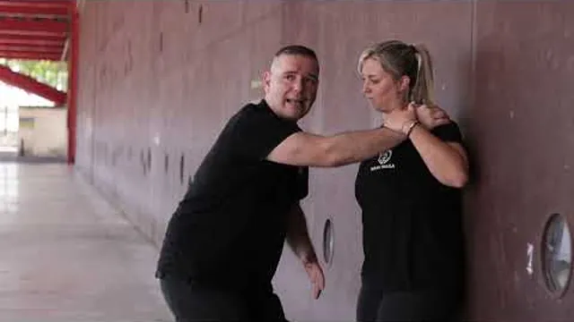
Ver · Defensa ante estrangulación contra la pared · DeportVer en YouTube ↗
Inicio: De pie, con la espalda contra una pared y ella enfrente.
Nunca te quedes cuadrada de frente contra la pared: gira de lado de inmediato.
Un antebrazo hace marco en su pecho o su cuello para mantener la distancia.
Baja el centro de gravedad y camina de lado pegada a la pared, no hacia adelante.
En cuanto llegues a la esquina o al espacio abierto, sales en diagonal.
Contra la pared no tienes hacia atrás. Tu salida es de lado, siempre.
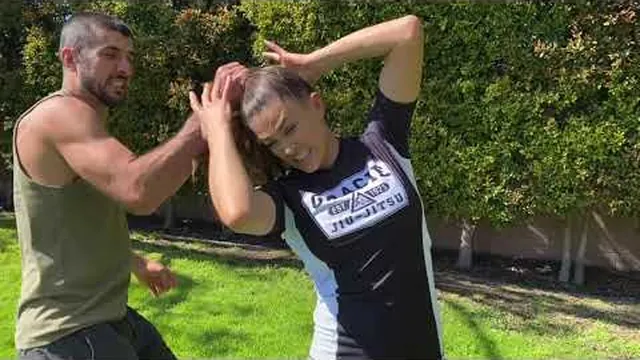
Ver · 5 Hair Grab Defenses · GracieBreakdownVer en YouTube ↗
Inicio: De pie; ella te sujeta el pelo desde el frente o desde atrás.
Lo primero: atrapa su mano contra tu cabeza con las dos manos. Si la mano no se mueve, no hay dolor.
Baja el centro de gravedad y gira todo tu cuerpo bajo su brazo.
El giro le tuerce la muñeca y el codo: la mano se suelta sola.
Sales de lado, con las manos arriba y la distancia recuperada.
Atrapa la mano primero. Si no la atrapas, cada movimiento tuyo te duele a ti.
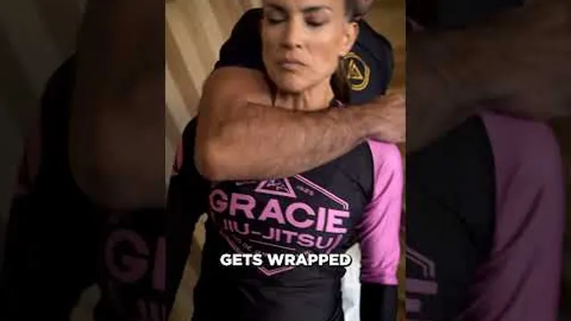
Ver · Three Rear Choke Defenses Everyone Should Know · GraVer en YouTube ↗
Inicio: De pie; ella te pasa el brazo por el cuello desde atrás.
Barbilla abajo de inmediato y las dos manos jalando su antebrazo hacia abajo.
Gira la cara hacia el hueco del codo: ahí es donde se respira.
Baja la cadera y gira hacia el lado de su brazo, saliendo por debajo.
Si no puedes girar, camina hacia atrás y llévala contra la pared.
Barbilla abajo y manos en el brazo. En ese orden, siempre, antes de cualquier otra cosa.
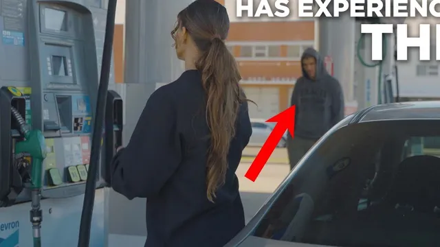
Ver · The #1 Self-Defense Tip for Women · GracieBreakdownVer en YouTube ↗
Inicio: Concepto. Es la última lección del curso y la más importante.
La mayoría de las situaciones se evitan antes: distancia, luz, gente, no tener las manos ocupadas.
Si te piden algo material, se entrega. Nada de lo que traes vale lo que puede pasar.
Todo lo que aprendiste sirve para un solo momento: cuando ya no hay salida y hay que crear una.
En cuanto exista la salida, la tomas. Aunque sientas que podías ganar.
Este curso no es para pelear. Es para poder irte cuando alguien decidió que no te fueras.
Al terminarEl siguiente paso
Después de estas cuatro semanas
Si terminaste el mes ya tienes la base real: sabes caer, sabes crear espacio, sabes salir de las dos posiciones peores y sabes qué hacer con los agarres más comunes de pie.
Lo que sigue no cabe en una guía: practicar con resistencia real, con alguien que no coopera, corrigiendo el detalle en el momento. Los lunes por la mañana entrenamos solo mujeres, en un grupo donde nadie empezó sabiendo nada.
Clase
Días
Horario
Coach
Jiu Jitsu Chicas — solo mujeres
Lunes
09:00 – 10:30
Arturo
Jiu Jitsu adultos (mixto)
Martes y jueves
08:30 – 10:00
Ken
Jiu Jitsu adultos (mixto)
Martes y jueves
20:00 – 21:30
Gabriel
Cuando quieras probarlo con alguien que corrige
Escríbenos y te contamos cómo es la clase de los lunes, qué necesitas llevar y con quién vas a entrenar. Sin compromiso y sin discurso de ventas: solo la información para que decidas.
◆ Becas disponibles ◆Si el precio es el problema, dilo sin pena. Tenemos opciones.
Primera lección hecha
La hiciste sola
Ese camarón que acabas de repetir treinta veces es el movimiento que sostiene los tres escapes que vienen. Si quieres, grábate haciéndolo y mándanoslo: te decimos en un audio qué corregir antes de seguir.
Los escapes que acabas de practicar son los que de verdad importan. Pero un escape solo cuenta cuando sale con alguien que pesa más y que no quiere soltarte. Eso no se puede ensayar en la sala.
Treinta y dos técnicas, ocho lecciones. Sabes caer, crear espacio, salir de las peores posiciones, terminar desde abajo, defenderte de golpes y romper los agarres que de verdad ocurren de pie. Es una base honesta y muy poca gente la tiene.
Lo que falta es resistencia real y alguien corrigiéndote. Los lunes por la mañana entrenamos solo mujeres.
Tu avance se guarda solo en este teléfono. Si cambias de teléfono o borras el
navegador, se pierde. Mándate tu enlace por WhatsApp y podrás continuar desde donde te quedaste,
en cualquier aparato.
El Dojo · Huizaches 22, San Mateo Acatitlán, Valle de Bravo Mapa ·
eldojo.mx ·
WhatsApp